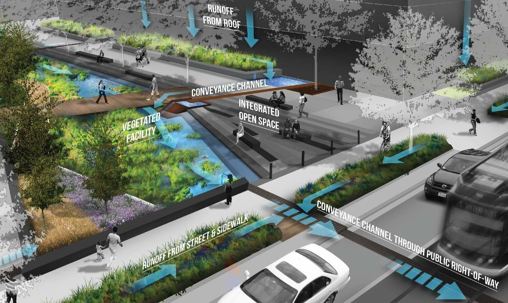
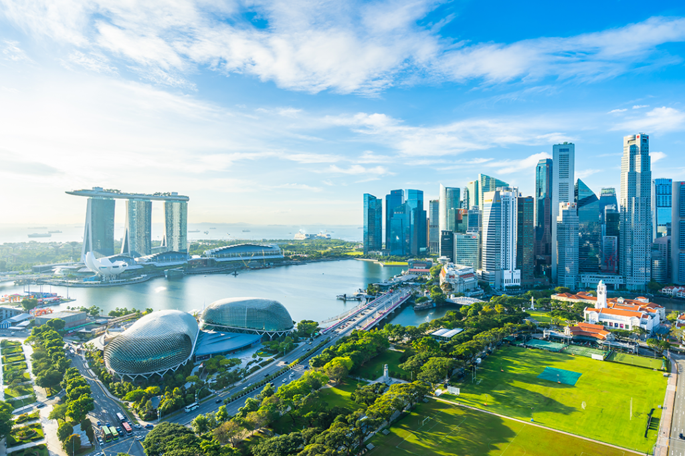
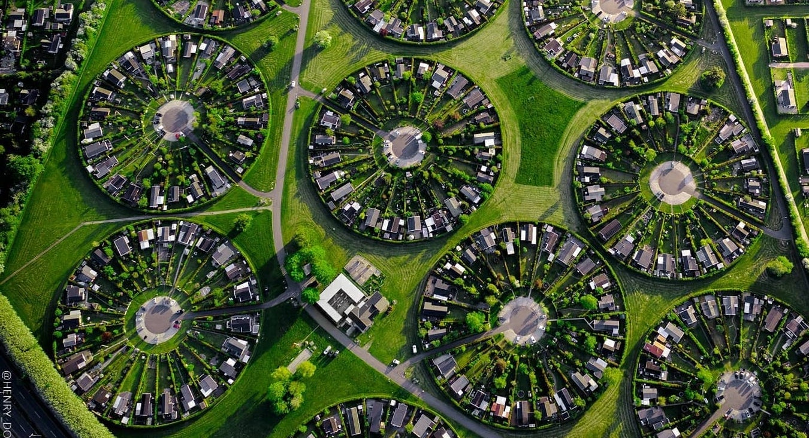

Certainly! Here are three examples of cities that have successfully implemented green infrastructure projects:

1. Portland, Oregon, USA: Portland has implemented a range of green infrastructure projects to manage stormwater runoff and enhance urban biodiversity. These include bioswales, rain gardens, and permeable pavement, which help absorb and filter rainwater, reducing the strain on the city's sewer system and preventing pollution of waterways.

2. ingapore: Despite its limited land area, Singapore has become a global leader in green infrastructure. The city-state has implemented innovative projects such as rooftop gardens, vertical greenery, and extensive tree planting to improve air quality, reduce the urban heat island effect, and enhance urban biodiversity.

3. Copenhagen, Denmark: Copenhagen is renowned for its commitment to sustainability and green living. The city has invested in green infrastructure projects such as bike lanes, green roofs, and sustainable drainage systems. These initiatives not only promote eco-friendly transportation but also help manage stormwater and reduce the city's carbon footprint.